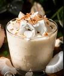
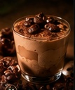

01
01 · INTENSO
Chinola
El golpe tropical que despierta el paladar.
ÁCIDA · AROMÁTICA · VIBRANTEPequeño RD$150Grande RD$250
Agregar al carrito
0
PREPARANDO LA EXPERIENCIA
SABOR TROPICAL · PREMIUM
Chinola intensa, mousse sedosa y una presentación pensada para que primero la mires… y después no quieras soltar la cuchara.
Descubrir la chinola↘TROPICAL, PERO REFINADO
No buscamos hacer otro postre. Buscamos crear ese momento en el que hundes la cuchara, rompes la capa de chinola y descubres una mousse ligera que se deshace lentamente.
Fresca. Ácida. Cremosa. Con ese pequeño contraste que hace que quieras otra cucharada.
EL MOMENTO TROPICAL MOUSSE
Crema fría, chinola intensa y una textura que invita a ir despacio. No necesitas una frase para describirlo: una cucharada lo dice todo.

ELIGE TU MOUSSE
Chinola intensa, coco suave y café con carácter. Tres mousses, una misma experiencia tropical pensada para que elijas tu favorito… o combines los tres.
El golpe tropical que despierta el paladar.
ÁCIDA · AROMÁTICA · VIBRANTE
02Suave y delicadamente dulce, con esencia tropical.
SUAVE · CREMOSO · TROPICAL
03Intenso y aromático, para un antojo con carácter.
INTENSO · AROMÁTICO · CREMOSO03 / TEXTURA
La fruta, la cuchara, el movimiento. Esta sección ahora usa video para que la textura tropical tenga vida en lugar de quedarse como una foto estática.
MÍRALO DE CERCA
Semillas brillantes, crema fría y una cuchara que entra despacio. Todo está pensado para que el producto se vea tan bien como sabe.
ENCUÉNTRANOS
TROPICAL MOUSSE nace como una experiencia tropical creada desde nuestro entorno. Si quieres conocernos, probar nuestro mousse o hacer tu pedido, puedes encontrarnos en CEGES Lucerna.
EL EQUIPO DETRÁS DE TROPICAL MOUSSE
04 / 04Darling, Jordany, Abdiel y Richard. Cuatro personas poniendo creatividad, organización y ganas detrás de cada mousse.
Una experiencia tropical creada para disfrutarse fría, lentamente y sin compartir… si no quieres.
TERMINA AQUÍ. O EMPIEZA OTRA VEZ.
MOUSSE DE CHINOLA · COCO · CAFÉ · TROPICAL PREMIUM · 2026